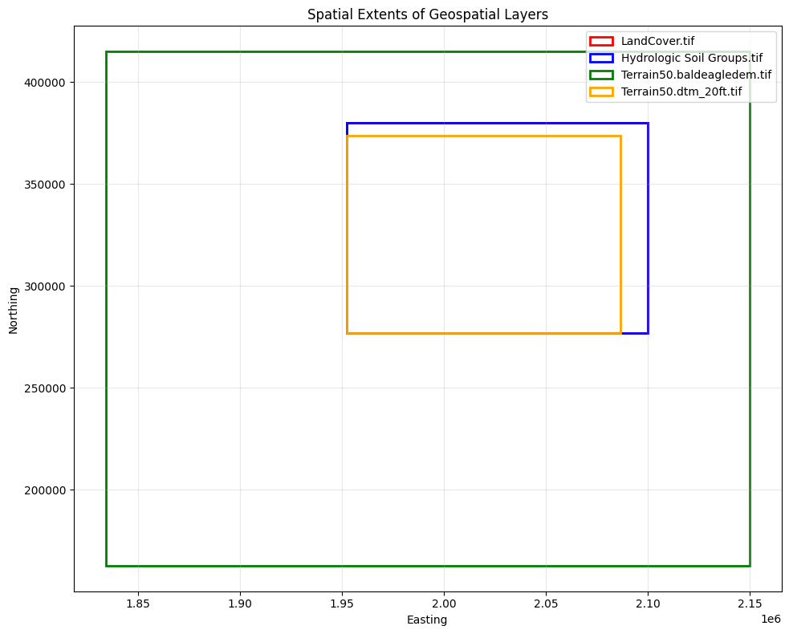

Validating RAS Mapper Layers and Terrain Files¶
Validation Framework¶
This notebook demonstrates the ras-commander validation framework for pre-flight checks and data quality assurance. The framework uses three core classes:
- ValidationSeverity: Severity levels (INFO < WARNING < ERROR < CRITICAL)
- ValidationResult: Single validation check result
- ValidationReport: Aggregation of multiple validation results
Why Validation Matters: - Catch errors before expensive HEC-RAS execution - Ensure data quality for reliable results - Document assumptions and limitations - Enable graceful degradation when optional data missing
Reference¶
- Validation Patterns:
.claude/rules/validation/validation-patterns.md - RasMap API:
ras_commander/RasMap.py(validation methods) - FEMA Data Capture Standards
LLM Forward Principle¶
Validation creates audit trail before execution: 1. Pre-flight checks documented: All validation results logged 2. Data quality issues flagged: Warnings visible to reviewers 3. Graceful degradation: System continues with reduced functionality when appropriate
Professional Context: Validation is not a substitute for engineering judgment. Use validation to identify issues, then apply professional expertise to determine appropriate actions.
# =============================================================================
# DEVELOPMENT MODE TOGGLE
# =============================================================================
# Set USE_LOCAL_SOURCE based on your setup:
# True = Use local source code (for developers editing ras-commander)
# False = Use pip-installed package (for users)
# =============================================================================
USE_LOCAL_SOURCE = True # <-- TOGGLE THIS (set to True for local development)
# -----------------------------------------------------------------------------
if USE_LOCAL_SOURCE:
import sys
from pathlib import Path
local_path = str(Path.cwd().parent) # Parent of examples/ = repo root
if local_path not in sys.path:
sys.path.insert(0, local_path) # Insert at position 0 = highest priority
print(f"📁 LOCAL SOURCE MODE: Loading from {local_path}/ras_commander")
else:
print("📦 PIP PACKAGE MODE: Loading installed ras-commander")
# Import ras-commander (will use local or pip based on toggle above)
from ras_commander import RasExamples, RasMap, ValidationSeverity, ras
# Verify which version loaded
import ras_commander
print(f"✓ Loaded: {ras_commander.__file__}")
📁 LOCAL SOURCE MODE: Loading from c:\GH\ras-commander/ras_commander
✓ Loaded: c:\GH\ras-commander\ras_commander\__init__.py
Understanding Severity Levels¶
ValidationSeverity Classification:
INFO - Informational (operation proceeds normally): - File metadata (size, format, creation date) - Successful validation checks - Data statistics and summaries
WARNING - Non-critical issue (operation may succeed): - Large files (performance impact) - Data extends beyond expected range - Missing optional datasets - Unusual but valid configurations
ERROR - Critical issue (operation will likely fail): - Required files not found - Invalid data format - Missing required datasets - Coordinate reference system undefined
CRITICAL - Blocking issue (cannot proceed): - File corrupted or unreadable - Incompatible file formats - Security violations
Decision Matrix:
report = RasMap.check_layer(terrain_file)
if report.is_valid:
# No ERROR or CRITICAL - safe to proceed
execute_mapping()
elif report.has_warnings:
# Warnings only - proceed with caution
logger.warning("Quality issues detected - review before use")
execute_mapping()
else:
# Errors or critical - cannot proceed
logger.error("Validation failed - fix issues before proceeding")
report.print_report(show_passed=False)
raise ValueError("Invalid terrain layer")
Validation Best Practices¶
1. Pre-Flight Checks Always validate inputs before expensive operations:
# Validate terrain before mapping
report = RasMap.check_layer(terrain_file, layer_type='terrain')
if not report.is_valid:
print("❌ Terrain validation failed - fix before mapping")
report.print_report(show_passed=False)
sys.exit(1)
# Proceed with mapping
execute_mapping(terrain_file)
2. Detailed vs Boolean Methods
- Detailed (check_*): Returns ValidationResult/ValidationReport with full diagnostics
- Boolean (is_valid_*): Returns True/False for simple checks
Use detailed when you need diagnostics, boolean for simple pass/fail.
3. Graceful Degradation
# Optional land cover layer
if RasMap.is_valid_layer(land_cover_file):
print("✓ Using land cover for Manning's n")
roughness = compute_from_land_cover(land_cover_file)
else:
print("⚠️ Land cover invalid - using default Manning's n")
roughness = default_mannings_n
4. Document Assumptions Always log validation results for audit trail:
report = RasMap.check_layer(terrain_file)
report.print_report() # Document all checks, not just failures
# Save to file for professional review
with open('validation_report.txt', 'w') as f:
f.write(str(report))
Professional Review Checklist¶
- [ ] All input layers validated before use
- [ ] Validation reports saved for review
- [ ] Warnings reviewed and dispositioned
- [ ] Errors fixed or exceptions documented
- [ ] Assumptions clearly stated
- [ ] Graceful degradation documented (if applicable)
Parameters¶
Configure these values to customize the notebook for your project.
# =============================================================================
# PARAMETERS - Edit these to customize the notebook
# =============================================================================
from pathlib import Path
# Project Configuration
PROJECT_NAME = "Muncie" # Example project to extract
RAS_VERSION = "6.6" # HEC-RAS version (6.3, 6.5, 6.6, etc.)
# HDF Analysis Settings
PLAN = "01" # Plan number (for HDF file path)
TIME_INDEX = -1 # Time step index (-1 = last)
PROFILE = "Max" # Profile name for steady analysis
Overview¶
This notebook demonstrates the RAS Mapper layer validation framework in ras-commander. RAS Mapper uses various geospatial layers (terrain, land cover, boundaries) to visualize and configure HEC-RAS models. Validating these layers ensures:
- Files exist and are readable
- Formats are supported (GeoJSON, Shapefile, GeoTIFF, HDF)
- Coordinate reference systems (CRS) are defined
- Raster metadata is valid
- Spatial extents cover the model domain
The validation framework provides: - Format validation - CRS validation - Raster metadata checks - Spatial extent verification - Specialized terrain and land cover validation - Comprehensive validation reports
We'll use the Muncie example project which includes RAS Mapper layers.
Extract Example Project¶
# Extract Muncie project (contains RAS Mapper configuration)
project_path = RasExamples.extract_project("BaldEagleCrkMulti2D")
print(f"\nProject extracted to: {project_path}")
2026-01-12 23:58:29 - ras_commander.RasExamples - INFO - Found zip file: C:\GH\ras-commander\examples\Example_Projects_6_6.zip
2026-01-12 23:58:29 - ras_commander.RasExamples - INFO - Loading project data from CSV...
2026-01-12 23:58:29 - ras_commander.RasExamples - INFO - Loaded 68 projects from CSV.
2026-01-12 23:58:29 - ras_commander.RasExamples - INFO - ----- RasExamples Extracting Project -----
2026-01-12 23:58:29 - ras_commander.RasExamples - INFO - Extracting project 'BaldEagleCrkMulti2D'
2026-01-12 23:58:33 - ras_commander.RasExamples - INFO - Successfully extracted project 'BaldEagleCrkMulti2D' to C:\GH\ras-commander\examples\example_projects\BaldEagleCrkMulti2D
Project extracted to: C:\GH\ras-commander\examples\example_projects\BaldEagleCrkMulti2D
# Find geospatial files in the project
from pathlib import Path
# Common geospatial file extensions
geo_extensions = ['*.tif', '*.tiff', '*.shp', '*.geojson', '*.json', '*.hdf', '*.h5']
geo_files = []
for pattern in geo_extensions:
geo_files.extend(project_path.glob(pattern))
# Also check subdirectories
geo_files.extend(project_path.glob(f"*/{pattern}"))
geo_files.extend(project_path.glob(f"*/*/{pattern}"))
print(f"Found {len(geo_files)} geospatial file(s):")
for geo_file in geo_files[:10]: # Show first 10
size_kb = geo_file.stat().st_size / 1024
print(f" - {geo_file.relative_to(project_path)} ({size_kb:.2f} KB)")
if len(geo_files) > 10:
print(f" ... and {len(geo_files) - 10} more")
Found 34 geospatial file(s):
- Land Classification\LandCover.tif (12955.67 KB)
- Soils Data\Hydrologic Soil Groups.tif (10196.48 KB)
- Terrain\Terrain50.baldeagledem.tif (173985.99 KB)
- Terrain\Terrain50.dtm_20ft.tif (11063.01 KB)
- GISData\MainChannelBanks.shp (28.14 KB)
- NLD\Lock_Haven_CenterLine.shp (11.56 KB)
- NLD\Lock_Haven_Floodwall.shp (0.10 KB)
- NLD\Lock_Haven_LeveedArea.shp (12.96 KB)
- BaldEagleDamBrk.g01.hdf (4894.39 KB)
- BaldEagleDamBrk.g02.hdf (1900.81 KB)
... and 24 more
# Look for terrain files specifically
terrain_files = [f for f in geo_files if 'terrain' in f.name.lower() or f.suffix.lower() in ['.tif', '.tiff']]
if terrain_files:
test_terrain_file = terrain_files[0]
print(f"Using terrain file: {test_terrain_file.name}")
else:
print("⚠️ No terrain files found - will use synthetic examples")
test_terrain_file = project_path / "terrain.tif" # For examples
Using terrain file: LandCover.tif
1. Format Validation: check_layer_format()¶
Validates that layer files exist, are readable, and have supported formats.
# Example 1: Valid terrain file (GeoTIFF)
if terrain_files:
result = RasMap.check_layer_format(test_terrain_file)
print(f"File: {test_terrain_file.name}")
print(f"Result: {result}")
print(f"\nDetails:")
for key, value in result.details.items():
print(f" {key}: {value}")
File: LandCover.tif
Result: [INFO] [PASS] geotiff_format: GeoTIFF format valid (14765x10318, 1 bands)
Details:
width: 14765
height: 10318
bands: 1
dtype: int32
crs: EPSG:2271
resolution: (10.0, 10.0)
bounds: BoundingBox(left=1952353.7000038475, bottom=276820.8446467547, right=2100003.7000038475, top=380000.8446467547)
# Example 2: Check various file types
file_types_to_check = {
'GeoTIFF': [f for f in geo_files if f.suffix.lower() in ['.tif', '.tiff']],
'Shapefile': [f for f in geo_files if f.suffix.lower() == '.shp'],
'GeoJSON': [f for f in geo_files if f.suffix.lower() in ['.geojson', '.json']],
'HDF': [f for f in geo_files if f.suffix.lower() in ['.hdf', '.h5']]
}
print("Format validation by file type:\n")
for file_type, files in file_types_to_check.items():
if files:
test_file = files[0]
result = RasMap.check_layer_format(test_file)
status = "✓" if result.passed else "✗"
print(f"{status} {file_type}: {test_file.name}")
print(f" {result.message}")
if result.severity == ValidationSeverity.WARNING:
print(f" ⚠️ {result.severity.value.upper()}")
print()
Format validation by file type:
✓ GeoTIFF: LandCover.tif
GeoTIFF format valid (14765x10318, 1 bands)
✓ Shapefile: MainChannelBanks.shp
Shapefile format valid (2 features)
✓ HDF: BaldEagleDamBrk.g01.hdf
HDF format valid (1 root groups)
# Example 3: Invalid file (doesn't exist)
nonexistent_file = project_path / "missing_terrain.tif"
result = RasMap.check_layer_format(nonexistent_file)
print(f"File: {nonexistent_file.name}")
print(f"Result: {result}")
print(f"Passed: {result.passed}")
print(f"Severity: {result.severity.value}")
File: missing_terrain.tif
Result: [ERROR] [FAIL] file_existence: File not found: C:\GH\ras-commander\examples\example_projects\BaldEagleCrkMulti2D\missing_terrain.tif
Passed: False
Severity: error
2. CRS Validation: check_layer_crs()¶
Validates coordinate reference system and checks compatibility with project CRS.
# Example 1: Check terrain CRS
if terrain_files:
result = RasMap.check_layer_crs(test_terrain_file)
print(f"File: {test_terrain_file.name}")
print(f"Result: {result}")
print(f"\nDetails:")
for key, value in result.details.items():
print(f" {key}: {value}")
File: LandCover.tif
Result: [INFO] [PASS] crs_validation: CRS valid: EPSG:2271
Details:
crs: EPSG:2271
# Example 2: Check CRS compatibility with expected projection
if terrain_files:
# First, get the CRS from the terrain file
result1 = RasMap.check_layer_crs(test_terrain_file)
if result1.passed and 'crs' in result1.details:
terrain_crs = result1.details['crs']
print(f"Terrain CRS: {terrain_crs}")
# Extract EPSG code as integer (e.g., "EPSG:2965" -> 2965)
epsg_code = None
if terrain_crs and terrain_crs.startswith("EPSG:"):
try:
epsg_code = int(terrain_crs.split(":")[1])
except (ValueError, IndexError):
pass
# Check if another file matches
if len(geo_files) > 1 and epsg_code:
other_file = [f for f in geo_files if f != test_terrain_file][0]
result2 = RasMap.check_layer_crs(other_file, expected_epsg=epsg_code)
print(f"\nComparing with: {other_file.name}")
print(f"Result: {result2}")
if result2.passed:
print(" CRS matches terrain file")
else:
print(" CRS mismatch - may need reprojection")
Terrain CRS: EPSG:2271
Comparing with: Hydrologic Soil Groups.tif
Result: [INFO] [PASS] crs_validation: CRS valid: EPSG:2271
CRS matches terrain file
3. Raster Metadata: check_raster_metadata()¶
Validates raster-specific properties (dimensions, resolution, no-data values).
# Example 1: Check terrain raster metadata
if terrain_files:
results = RasMap.check_raster_metadata(test_terrain_file)
print(f"File: {test_terrain_file.name}")
print(f"Number of checks: {len(results)}")
print(f"\nResults:")
for result in results:
status = "PASS" if result.passed else "FAIL"
print(f" [{status}] {result.check_name}: {result.message}")
if result.details:
for key, value in result.details.items():
print(f" {key}: {value}")
File: LandCover.tif
Number of checks: 3
Results:
[PASS] resolution_check: Raster resolution acceptable: 10.00 meters
resolution: 10.0
[PASS] nodata_check: Raster nodata acceptable: 0.0%
nodata_percent: 0.0
[PASS] extent_info: Raster extent: (1952353.70, 276820.84, 2100003.70, 380000.84)
bounds: (1952353.7000038475, 276820.8446467547, 2100003.7000038475, 380000.8446467547)
# Example 2: Check multiple raster files
raster_files = [f for f in geo_files if f.suffix.lower() in ['.tif', '.tiff']]
if raster_files:
print(f"Raster metadata for {len(raster_files)} file(s):\n")
for raster_file in raster_files[:3]: # Check first 3
results = RasMap.check_raster_metadata(raster_file)
print(f"File: {raster_file.name}")
# Extract key metrics from results
for result in results:
if result.check_name == 'resolution_check' and result.details:
print(f" Resolution: {result.details.get('resolution', 'N/A')} meters")
elif result.check_name == 'nodata_check' and result.details:
print(f" No-data: {result.details.get('nodata_percent', 'N/A'):.1f}%")
elif result.check_name == 'extent_info' and result.details:
bounds = result.details.get('bounds')
if bounds:
print(f" Extent: {bounds[0]:.2f}, {bounds[1]:.2f} to {bounds[2]:.2f}, {bounds[3]:.2f}")
print()
Raster metadata for 4 file(s):
File: LandCover.tif
Resolution: 10.0 meters
No-data: 0.0%
Extent: 1952353.70, 276820.84 to 2100003.70, 380000.84
File: Hydrologic Soil Groups.tif
Resolution: 10.0 meters
No-data: 0.0%
Extent: 1952353.70, 276820.84 to 2100003.70, 380000.84
File: Terrain50.baldeagledem.tif
Resolution: 36.504512049933 meters
No-data: 0.8%
Extent: 1834327.20, 162918.81 to 2149835.69, 414872.95
4. Spatial Extent: check_spatial_extent()¶
Validates spatial coverage and checks overlap with expected domain.
# Example 1: Check terrain spatial extent
# First we need to get the layer's bounds to establish a model extent
if terrain_files:
import rasterio
# Get bounds of the terrain file
with rasterio.open(test_terrain_file) as src:
terrain_bounds = src.bounds
model_extent = (terrain_bounds.left, terrain_bounds.bottom,
terrain_bounds.right, terrain_bounds.top)
print(f"File: {test_terrain_file.name}")
print(f"Model extent (from terrain): {model_extent}")
# Now check spatial extent with that as the reference
result = RasMap.check_spatial_extent(test_terrain_file, model_extent)
print(f"\nResult: {result}")
print(f"\nDetails:")
for key, value in result.details.items():
print(f" {key}: {value}")
File: LandCover.tif
Model extent (from terrain): (1952353.7000038475, 276820.8446467547, 2100003.7000038475, 380000.8446467547)
Result: [INFO] [PASS] spatial_coverage: Layer covers 100.0% of model domain
Details:
coverage_percent: 100.0
# Example 2: Check coverage overlap between layers
if len(geo_files) >= 2 and terrain_files:
import rasterio
# Use terrain as the model extent reference
with rasterio.open(test_terrain_file) as src:
terrain_bounds = src.bounds
model_extent = (terrain_bounds.left, terrain_bounds.bottom,
terrain_bounds.right, terrain_bounds.top)
file1 = test_terrain_file
file2 = [f for f in geo_files if f != test_terrain_file][0]
print(f"Checking overlap:\n")
print(f"Reference (model extent from terrain): {test_terrain_file.name}")
print(f" Bounds: minx={model_extent[0]:.2f}, miny={model_extent[1]:.2f}, maxx={model_extent[2]:.2f}, maxy={model_extent[3]:.2f}")
# Check if second file overlaps with model extent
result = RasMap.check_spatial_extent(file2, model_extent)
print(f"\nFile 2: {file2.name}")
print(f" {result}")
if result.passed:
print(f"\n Files have overlapping coverage")
if result.details and 'coverage_percent' in result.details:
print(f" Coverage: {result.details['coverage_percent']:.1f}%")
else:
print(f"\n Coverage mismatch detected")
Checking overlap:
Reference (model extent from terrain): LandCover.tif
Bounds: minx=1952353.70, miny=276820.84, maxx=2100003.70, maxy=380000.84
File 2: Hydrologic Soil Groups.tif
[INFO] [PASS] spatial_coverage: Layer covers 100.0% of model domain
Files have overlapping coverage
Coverage: 100.0%
5. Terrain Layer Validation: check_terrain_layer()¶
Specialized validation for terrain/elevation layers.
# Example 1: Comprehensive terrain validation
# The check_terrain_layer method validates terrain layers in a rasmap file
rasmap_files = list(project_path.glob("*.rasmap"))
if rasmap_files and terrain_files:
rasmap_file = rasmap_files[0]
print(f"RASMapper file: {rasmap_file.name}")
# Get terrain names from the rasmap
terrain_names = RasMap.get_terrain_names(rasmap_file)
if terrain_names:
layer_name = terrain_names[0]
print(f"Terrain layer found: {layer_name}")
result = RasMap.check_terrain_layer(rasmap_file, layer_name)
print(f"\nResult: {result}")
print(f"\nDetails:")
for key, value in result.details.items():
if isinstance(value, dict):
print(f" {key}:")
for sub_key, sub_val in value.items():
print(f" {sub_key}: {sub_val}")
else:
print(f" {key}: {value}")
else:
print("No terrain layers found in rasmap")
else:
print("No rasmap file found - skipping terrain layer validation")
print("\nTo validate terrain layers in a rasmap:")
print(" result = RasMap.check_terrain_layer('project.rasmap', 'Terrain_Name')")
2026-01-12 23:58:43 - ras_commander.RasMap - INFO - Extracted terrain names: ['Terrain50']
2026-01-12 23:58:43 - ras_commander.RasMap - INFO - Extracted terrain names: ['Terrain50']
RASMapper file: BaldEagleDamBrk.rasmap
Terrain layer found: Terrain50
Result: [INFO] [PASS] terrain_layer_validation: Terrain layer 'Terrain50' found in rasmap
Details:
layer_name: Terrain50
# Example 2: Validate elevation range using rasterio directly
# Since check_terrain_layer works with rasmap, let's use rasterio for elevation stats
if terrain_files:
import rasterio
import numpy as np
with rasterio.open(test_terrain_file) as src:
data = src.read(1) # Read first band
nodata = src.nodata
# Mask nodata values
if nodata is not None:
valid_data = data[data != nodata]
else:
valid_data = data.flatten()
# Calculate statistics
min_elev = float(np.min(valid_data)) if len(valid_data) > 0 else None
max_elev = float(np.max(valid_data)) if len(valid_data) > 0 else None
mean_elev = float(np.mean(valid_data)) if len(valid_data) > 0 else None
print(f"Terrain elevation statistics for {test_terrain_file.name}:\n")
print(f" Minimum: {min_elev:.2f}" if min_elev is not None else " Minimum: N/A")
print(f" Maximum: {max_elev:.2f}" if max_elev is not None else " Maximum: N/A")
print(f" Mean: {mean_elev:.2f}" if mean_elev is not None else " Mean: N/A")
# Check for reasonable range
if min_elev is not None and max_elev is not None:
if min_elev < -500 or max_elev > 15000:
print("\n WARNING: Elevation range may be unrealistic for US terrain")
print(" Check units (should be feet or meters, not mm or other)")
else:
print("\n Elevation range appears reasonable")
Terrain elevation statistics for LandCover.tif:
Minimum: 11.00
Maximum: 95.00
Mean: 46.75
Elevation range appears reasonable
6. Land Cover Validation: check_land_cover_layer()¶
Specialized validation for land cover/Manning's n layers.
# Example 1: Check land cover layer
# check_land_cover_layer validates land cover configuration in a rasmap file
rasmap_files = list(project_path.glob("*.rasmap"))
# For land cover, we need to know the layer name
# Since there's no get_land_cover_names method, we'll demonstrate the API pattern
if rasmap_files:
rasmap_file = rasmap_files[0]
print(f"RASMapper file: {rasmap_file.name}")
# Demonstrate with a placeholder - in real use you'd know your layer name
land_cover_layer = "LandCover" # Example layer name
print(f"\nLand cover validation example:")
print(f" result = RasMap.check_land_cover_layer('{rasmap_file.name}', '{land_cover_layer}')")
print(f"\nLand cover validation checks:")
print(" - Layer exists in rasmap")
print(" - File format (typically raster)")
print(" - CRS matches terrain")
print(" - Categorical data (land use classes)")
print(" - Spatial coverage matches model domain")
else:
print("No rasmap file found in project")
print("\nTo validate land cover layers in a rasmap:")
print(" result = RasMap.check_land_cover_layer('project.rasmap', 'LandCover_Name')")
RASMapper file: BaldEagleDamBrk.rasmap
Land cover validation example:
result = RasMap.check_land_cover_layer('BaldEagleDamBrk.rasmap', 'LandCover')
Land cover validation checks:
- Layer exists in rasmap
- File format (typically raster)
- CRS matches terrain
- Categorical data (land use classes)
- Spatial coverage matches model domain
7. Comprehensive Layer Validation: check_layer()¶
Performs all applicable validation checks and returns a comprehensive report.
# Example 1: Comprehensive validation of a terrain layer in a rasmap file
rasmap_files = list(project_path.glob("*.rasmap"))
if rasmap_files:
rasmap_file = rasmap_files[0]
print(f"RASMapper file: {rasmap_file.name}")
# Get terrain names
terrain_names = RasMap.get_terrain_names(rasmap_file)
if terrain_names:
layer_name = terrain_names[0]
layer_type = "Terrain"
print(f"\nValidating layer: {layer_name}")
print(f"Layer type: {layer_type}")
report = RasMap.check_layer(
rasmap_path=rasmap_file,
layer_name=layer_name,
layer_type=layer_type
)
print(f"\nReport summary: {report.summary}")
print(f"Is valid: {report.is_valid}")
print(f"Has warnings: {report.has_warnings}")
# Print formatted report
print("\nDetailed Report:")
report.print_report(show_passed=True)
else:
print("No terrain layers found in rasmap file")
else:
print("No rasmap file found in project")
print("\nTo validate layers in a rasmap:")
print(" report = RasMap.check_layer('project.rasmap', 'Layer_Name', 'Terrain')")
2026-01-12 23:58:46 - ras_commander.RasMap - INFO - Extracted terrain names: ['Terrain50']
2026-01-12 23:58:46 - ras_commander.RasMap - INFO - Extracted terrain names: ['Terrain50']
RASMapper file: BaldEagleDamBrk.rasmap
Validating layer: Terrain50
Layer type: Terrain
Report summary: 1 info, 0 warnings, 0 errors, 0 critical
Is valid: True
Has warnings: False
Detailed Report:
================================================================================
Validation Report: C:\GH\ras-commander\examples\example_projects\BaldEagleCrkMulti2D\BaldEagleDamBrk.rasmap - Terrain50
Timestamp: 2026-01-12T23:58:46.360751
================================================================================
Summary: 1 info, 0 warnings, 0 errors, 0 critical
Overall Status: VALID
================================================================================
Detailed Results:
================================================================================
[INFO] [PASS] terrain_layer_validation: Terrain layer 'Terrain50' found in rasmap
layer_name: Terrain50
================================================================================
# Example 2: Filter validation results by severity
rasmap_files = list(project_path.glob("*.rasmap"))
if rasmap_files:
rasmap_file = rasmap_files[0]
terrain_names = RasMap.get_terrain_names(rasmap_file)
if terrain_names:
layer_name = terrain_names[0]
layer_type = "Terrain"
report = RasMap.check_layer(rasmap_file, layer_name, layer_type)
# Get only errors
errors = report.get_results_by_severity(ValidationSeverity.ERROR)
print(f"Errors found: {len(errors)}")
for error in errors:
print(f" [FAIL] {error}")
# Get only warnings
warnings = report.get_results_by_severity(ValidationSeverity.WARNING)
print(f"\nWarnings found: {len(warnings)}")
for warning in warnings:
print(f" [WARN] {warning}")
# Get info messages
info = report.get_results_by_severity(ValidationSeverity.INFO)
print(f"\nInfo messages: {len(info)}")
for msg in info:
print(f" [INFO] {msg}")
else:
print("No terrain layers found")
else:
print("No rasmap file found - skipping severity filtering example")
2026-01-12 23:58:46 - ras_commander.RasMap - INFO - Extracted terrain names: ['Terrain50']
2026-01-12 23:58:46 - ras_commander.RasMap - INFO - Extracted terrain names: ['Terrain50']
Errors found: 0
Warnings found: 0
Info messages: 1
[INFO] [INFO] [PASS] terrain_layer_validation: Terrain layer 'Terrain50' found in rasmap
8. Boolean Convenience: is_valid_layer()¶
Quick boolean check for layer validity.
# Example: Quick validation of terrain layers in a rasmap file
rasmap_files = list(project_path.glob("*.rasmap"))
if rasmap_files:
rasmap_file = rasmap_files[0]
terrain_names = RasMap.get_terrain_names(rasmap_file)
print(f"Quick validation of terrain layers in {rasmap_file.name}:\n")
for layer_name in terrain_names:
layer_type = "Terrain"
is_valid = RasMap.is_valid_layer(rasmap_file, layer_name, layer_type)
status = "VALID" if is_valid else "INVALID"
print(f"{status}: {layer_name} ({layer_type})")
if not terrain_names:
print("No terrain layers found in rasmap")
else:
print("No rasmap file found in project")
print("\nQuick validation example:")
print(" is_valid = RasMap.is_valid_layer('project.rasmap', 'Terrain_2024', 'Terrain')")
2026-01-12 23:58:46 - ras_commander.RasMap - INFO - Extracted terrain names: ['Terrain50']
2026-01-12 23:58:46 - ras_commander.RasMap - INFO - Extracted terrain names: ['Terrain50']
Quick validation of terrain layers in BaldEagleDamBrk.rasmap:
VALID: Terrain50 (Terrain)
9. Practical Use Case: Pre-Flight Check for Model Setup¶
Validate all required RAS Mapper layers before model setup.
# Simulate pre-flight check for model setup
print("=" * 80)
print("PRE-FLIGHT CHECK: RAS Mapper Layer Validation")
print("=" * 80)
rasmap_files = list(project_path.glob("*.rasmap"))
if rasmap_files:
rasmap_file = rasmap_files[0]
print(f"\nRASMapper file: {rasmap_file.name}")
# Get terrain layers
terrain_names = RasMap.get_terrain_names(rasmap_file)
all_valid = True
for layer_name in terrain_names:
layer_type = "Terrain"
print(f"\n{'='*80}")
print(f"Checking: {layer_name} ({layer_type})")
print(f"{'='*80}")
# Quick check
is_valid = RasMap.is_valid_layer(rasmap_file, layer_name, layer_type)
if is_valid:
print(f" PASS")
else:
print(f" FAIL - running detailed diagnostics...")
# Get detailed report
report = RasMap.check_layer(rasmap_file, layer_name, layer_type)
report.print_report(show_passed=False)
all_valid = False
if not terrain_names:
print("\n No terrain layers found in rasmap")
all_valid = False
print("\n" + "=" * 80)
if all_valid:
print("PRE-FLIGHT CHECK PASSED - All terrain layers valid")
print(" Ready to configure RAS Mapper")
else:
print("PRE-FLIGHT CHECK FAILED - Fix layer issues before proceeding")
print("=" * 80)
else:
print("\nNo rasmap file found in project")
print("\nPre-flight check requires a .rasmap file with configured layers")
2026-01-12 23:58:46 - ras_commander.RasMap - INFO - Extracted terrain names: ['Terrain50']
2026-01-12 23:58:46 - ras_commander.RasMap - INFO - Extracted terrain names: ['Terrain50']
================================================================================
PRE-FLIGHT CHECK: RAS Mapper Layer Validation
================================================================================
RASMapper file: BaldEagleDamBrk.rasmap
================================================================================
Checking: Terrain50 (Terrain)
================================================================================
PASS
================================================================================
PRE-FLIGHT CHECK PASSED - All terrain layers valid
Ready to configure RAS Mapper
================================================================================
10. Visualization: Layer Extent Comparison (Optional)¶
Visualize spatial extents of multiple layers to verify coverage.
# Optional: Visualize layer extents using matplotlib and rasterio
try:
import matplotlib.pyplot as plt
import matplotlib.patches as patches
import rasterio
raster_files = [f for f in geo_files if f.suffix.lower() in ['.tif', '.tiff']]
if raster_files:
fig, ax = plt.subplots(figsize=(10, 8))
colors = ['red', 'blue', 'green', 'orange', 'purple']
for i, raster_file in enumerate(raster_files[:5]): # Plot first 5
try:
with rasterio.open(raster_file) as src:
bounds = src.bounds
# Extract bounds
minx = bounds.left
miny = bounds.bottom
maxx = bounds.right
maxy = bounds.top
width = maxx - minx
height = maxy - miny
# Draw rectangle
rect = patches.Rectangle(
(minx, miny), width, height,
linewidth=2, edgecolor=colors[i % len(colors)],
facecolor='none', label=raster_file.name
)
ax.add_patch(rect)
except Exception as e:
print(f"Could not read {raster_file.name}: {e}")
ax.set_xlabel('Easting')
ax.set_ylabel('Northing')
ax.set_title('Spatial Extents of Geospatial Layers')
ax.legend(loc='upper right')
ax.autoscale()
ax.set_aspect('equal')
plt.grid(True, alpha=0.3)
plt.tight_layout()
plt.show()
print("\nExtent visualization complete")
print(" Overlapping rectangles indicate good coverage alignment")
else:
print("No raster files found for visualization")
except ImportError as e:
print(f"Visualization dependencies not available: {e}")

Extent visualization complete
Overlapping rectangles indicate good coverage alignment
Cleanup¶
# Clean up extracted project
import shutil
if project_path.parent.name == "example_projects":
shutil.rmtree(project_path.parent, ignore_errors=True)
print("✓ Cleaned up example projects")
✓ Cleaned up example projects
Summary¶
This notebook demonstrated the RAS Mapper layer validation framework:
Individual Validation Methods:
- check_layer_format() - Validates file format and accessibility
- check_layer_crs() - Validates coordinate reference system
- check_raster_metadata() - Validates raster properties
- check_spatial_extent() - Validates spatial coverage
Specialized Validations:
- check_terrain_layer() - Terrain-specific validation
- check_land_cover_layer() - Land cover-specific validation
Comprehensive Validation:
- check_layer() - Runs all applicable checks, returns ValidationReport
Boolean Convenience:
- is_valid_layer() - Quick validity check
Validation Reports: - Filter by severity (INFO, WARNING, ERROR, CRITICAL) - Get failed checks - Print formatted reports
Use these tools to ensure RAS Mapper layers are valid before model setup and execution!